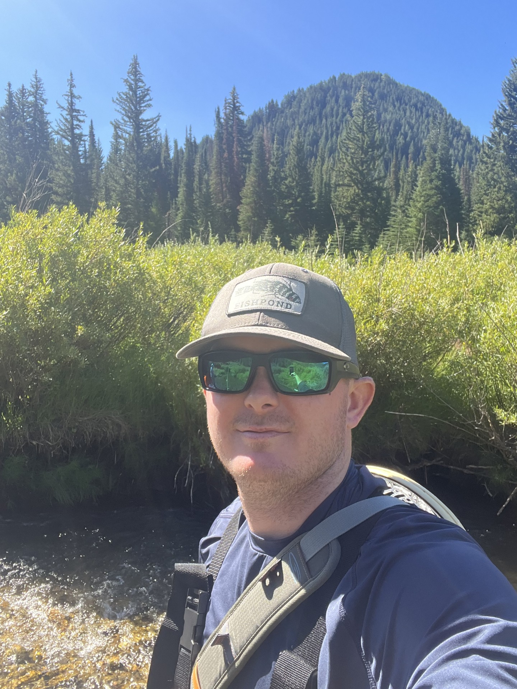
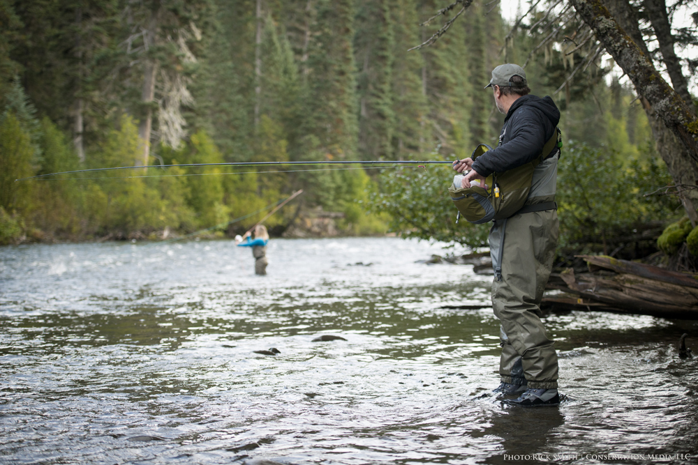

Meet Our Team

Meet the expert guides at River Run Guides, dedicated to providing exceptional fly fishing experiences.

Porter C.
Lead Guide with 10+ years of experience.
- Safety Rating: Top Safety Rating (Certified Safety Expert)
- Guiding Experience: 10 years of professional fly fishing guiding
- Specialty: Expert in reading river currents
- Passion: Mentoring new anglers with patience and skill

Sarah Brooks
Expert in fly selection and casting techniques.
- Safety Rating: Top Safety Rating (Certified Safety Expert)
- Guiding Experience: 6 years of professional fly fishing guiding
- Skill: Master of advanced casting techniques
- Hobby: Designs custom flies for unique fishing conditions

Mike Waters
Specialist in multi-day wilderness adventures.
- Safety Rating: Top Safety Rating (Certified Safety Expert)
- Guiding Experience: 8 years of professional fly fishing guiding
- Expertise: Wilderness survival and navigation
- Interest: Photography of remote fishing locations